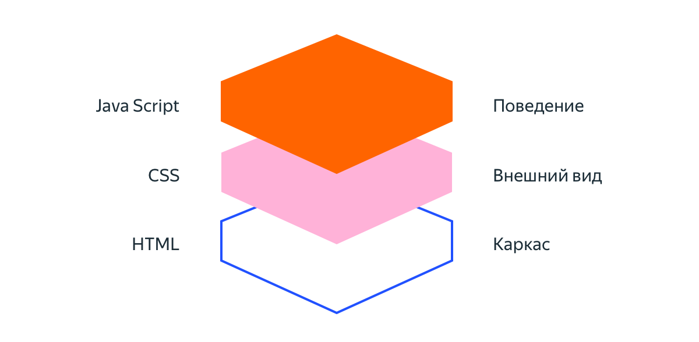
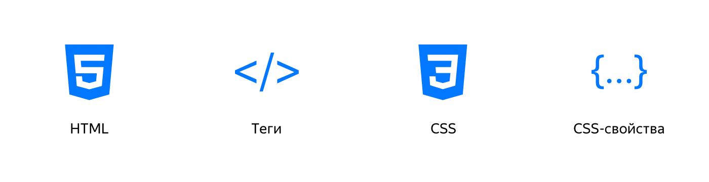

Дизайн сайта
Это внешний вид и структура сайта: шрифты, цвета, кнопки, элементы
меню, разделы и т.д. Его продумывают после того, как возникает идея
сделать сайт. Дизайн есть у всех элементов сайта: от баннера или
всплывающего меню на главной странице до кнопки перехода в чат в
разделе «Контакты».
Контент сайта
Это любая информация, которую владелец сайта размещает на его
страницах: текст, ссылки, фото, аудио и
видеоматериалы. Контент сайта хранится на хостинге. Когда
пользователь заходит на определённую страницу, программное обеспечение
хостинга находит и загружает нужные файлы.
Код сайта
Код — это текст, в котором разработчики описывают дизайн и
поведение сайта на понятном для компьютеров языке. Такие языки
называют языками программирования. Языки бывают разные: с помощью
одних описывают интерфейс, с помощью других — поведение сервера.
Интерфейсный код (Front-end) описывает дизайн. С его помощью
компьютеры понимают внешний вид и расположение элементов на сайте.
Чтобы написать интерфейсный код, программисты используют языки
HTML, CSS и Javascript. Возможно, вам встречалось такое
понятие как «вёрстка сайта». Вёрстка сайта — это процесс
создания интерфейсного кода.

Треугольник интерактивной вёрстки состоит из HTML, CSS, JavaScript.
Начинать нужно с HTML и CSS. Причём сразу с обоих.
Разбор конструкций языков HTML и CSS происходит по принципу «от общего
к частному». Вы узнаете, что такое HTML-теги и атрибуты HTML, свойства
и селекторы CSS.

Серверный код (Back-end) описывает поведение сайта. С его помощью
сервер определяет, что произойдёт, если пользователь нажмёт на кнопку
или введёт текст. У одностраничных сайтов такого кода может и не быть.
Серверный код нужен, если на сайте есть возможность создать аккаунт,
купить товар или услугу. Серверный код пишут на
CSS , PHP, Java, Ruby и
т.д.
Для создания сайта нужно придумать дизайн, найти контент и написать
код. Всё это
можно заказать у веб-студии или
нужно сделать самому!